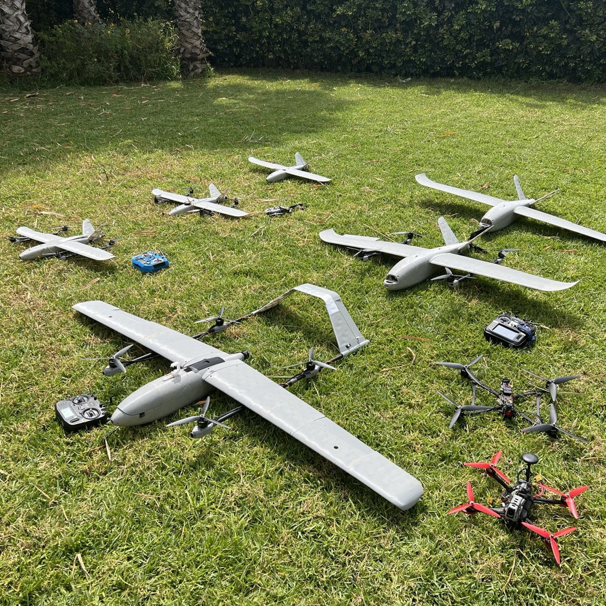
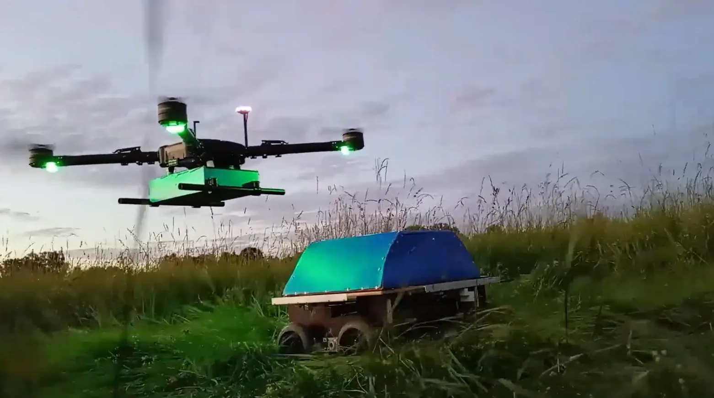
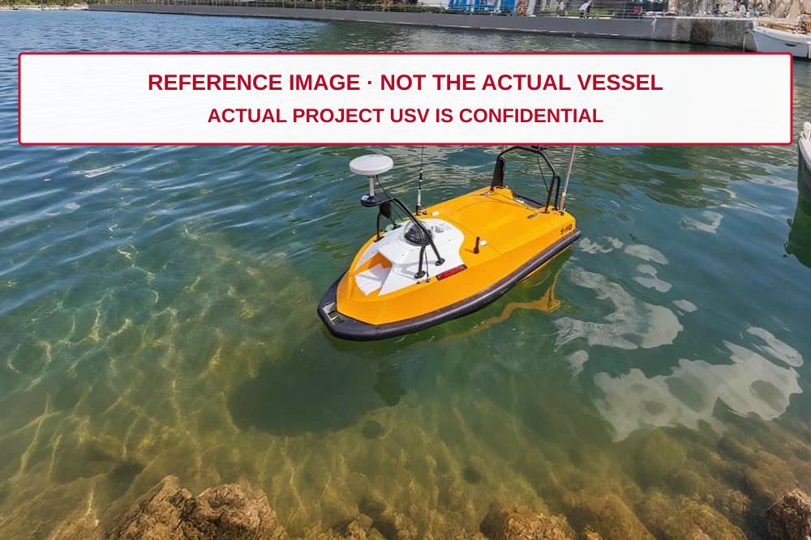
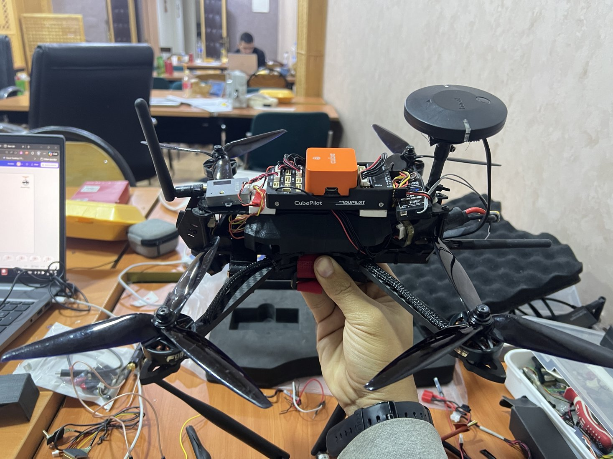

VTOL & fixed-wing aircraft
Fixed-wing, QuadPlane and tiltrotor development, from V-tail, pusher and twin-motor airframes through propulsion integration, SITL, real flight tests and missions.
Explore the work →Design · Build · Integrate · Test
Five platform portfolios bring together the aircraft, systems and engineering work behind each area. Explore the builds, modeling, electronics, configuration, reports and test evidence within them.

Fixed-wing, QuadPlane and tiltrotor development, from V-tail, pusher and twin-motor airframes through propulsion integration, SITL, real flight tests and missions.
Explore the work →
FPV, cinewhoop, quadcopter and heavy-lift work across 2 to 42-inch platforms, covering propulsion, integration, calibration, tuning and missions, alongside helicopter diagnostics.
Explore the work →
Complete drone-rover system development and testing, combining aerial and ground autopilots, motor control, communications, docking and failsafe behaviour.
Explore the work →
USV / ASV development, from architecture and propulsion control to autopilot navigation, onboard vision and water testing.
Explore the work →
Companion-computer interfaces, payload video, engineering design review and vision-based landing architecture.
Explore the work →No matching platforms. Clear the search or choose another category.